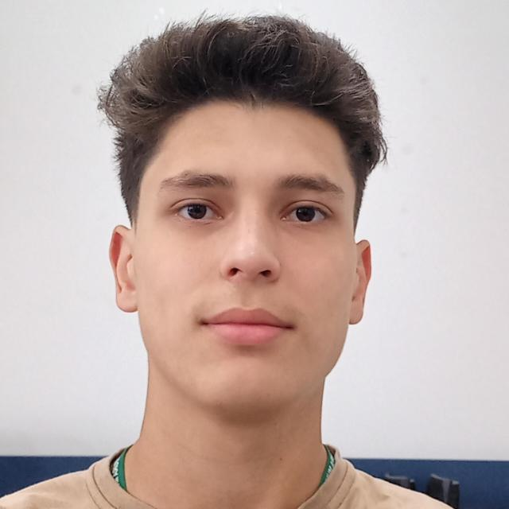

Leonardo Gabriel Pavan
Tornei-me técnico em informática 2021 e iniciei o Bacharelado em Ciência da Computação em 2022.
Algumas das minhas hardskills estão listadas a seguir: programação, engenharia de software, sistemas operacionais, redes de computadores,
eletrônica, robótica, sistemas embarcados, banco de dados, certificação em inglês (TOEIC), etc. Além disso, algumas das minhas
softskills são: análise crítica e construtiva, planejamento, produtividade e consistência, senso crítico, comunicação não violenta,
abstração e exemplificação, etc.